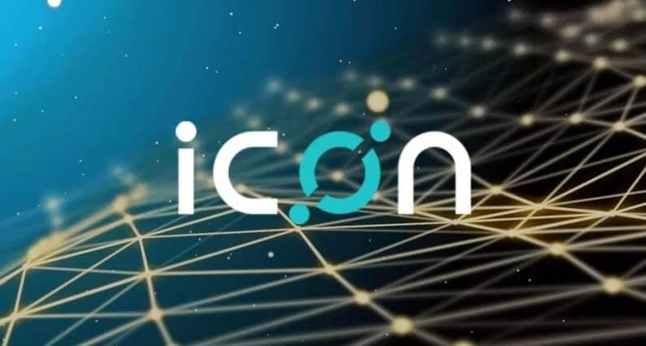

Mi az az ICON? Útmutató kezdőknek
ICON össze szeretné kötni a világot, megépítve a legnagyobb decentralizált hálózatot. Az ICON csapat egy masszív platformot épít amely lehetővé teszi különböző blokkláncoknak, hogy kommunikáljanak egymással okos szerződések segítségével.
Az úgynevezett 'ICON köztársaság'-on belül különböző közösségek összekapcsolódhatnak ICON loopchain technológiáját használva. ICON végcélja egy olyan platform létrehozása ahol pénzügyi, biztonsági, biztosítási, egészségügyi, oktatási és kereskedelmi iparágak egymás mellett létezhetnek és tranzakciókat végezhetnek egyetlen hálózaton.
Mi különbözteti meg ICON-t más kriptovalutáktól?
A legtöbb kriptovalutának nincs meg ICON képessége, hogy hídként szolgáljon nyilvános blokkláncok között mint Bitcoin, Ethereum, QTUM vagy NEO. Ezt azért képes megvalósítani, mert egy teljesen más blokklánca van a protokoll szintjén. Nem követi a hagyományos blokklánc protokollokat amelyek Ethereum vagy más kriptovalutákban találhatók. A forradalmian új rendszer a saját szabadalmaztatott LFT (Loop Fault Tolerant) megegyezési mechanizmust használja.
ICON használhatósági esetei
ICON 'Blockchain ID' projektje teljes mértékben okos szerződésekre épül. Ez potenciálisan, globális módja lehet az identitás azonosításnak és igazolásnak az interneten. Ez a dapp rengeteg időt spórolhat személyazonosság ellenőrzésénél, egy diák kedvezmény beváltásánál vagy egy bankszámla nyitásánál.
Egy másik decentralizált applikáció a ' Payment & Exchange' amely közösségek között működik, engedélyezve egy vállalatnak az egyik közösségben pénz küldését egy másik közösségben lévő cégnek. Az ICON tárca lehetővé teszi a váltást, utalást és különböző pénzügyek rendezését valós időben egy decentralizált váltót használva. Ez csaknem minden iparágban használható lehet, többek között bankok, biztosítók és egyetemek között.
ICON működése
ICON összekapcsolja a blokklánc ökoszisztémákat az ICON Köztársaságon keresztül. Amint azt a név is sugallja, az ICON Köztársaság irányító szervként működik az egyébként független blokklánc szervezetek számára. Legkönnyebb úgy elképzelni az ICON köztársaságot, mint az Egyesült Államokat amelyben minden ICON közösség egy-egy államot reprezentál.
A közösségek hozzá vannak kapcsolva a Köztársasághoz közösségi képviselőkön keresztül, amik kapcsolódnak a Nexus-hoz, a 'loopchain' alapú blokklánchoz, amely az ICON Köztársaság alapjául szolgál. Ezek a képviselők portálként működnek a közösségek számára amelyek így kommunikálhatnak a Nexus-al és ezáltal a többi közösséggel az ICON Köztársaságban. Azok a blokkláncok amelyek ICON-t használják, valutát válthatnak a platform decentralizált váltóját használva.
ICON előnyei
ICON bővíthető, arra törekszik, hogy bármilyen méretű vállalat számára megoldásokat kínáljon. Bármilyen probléma nélkül működik Bitcoin, Ethereum és más hagyományos blokkláncokkal.
ICON hálózat használhatóságra törekszik, lehetővé téve, hogy a blokklánc technológia hasznosítható legyen a mindennapi életben. A projekt fejlesztése során a csapat igazi a valóságban is használható alkalmazásokat dolgozott ki amely használható meglévő közösségek és vállalkozások számára.
ICON is decentralizált, amely az egyre növekvő tendenciát követve ideális a közösségek számára. Köszönhetően a hálózat decentralizált természetének közösségek kapcsolatba léphetnek és kommunikálhatnak egymással akkor is ha teljesen különböző az irányítási struktúrájuk. Bárki csatlakozhat a hálózathoz a saját dapp-jával aminek független az irányítása.
Ki áll ICON mögött?
ICON-t több mint két éve fejlesztik. Dayli Financial Group alapította amely egy koreai fintech cég, több mint 4 milliárd dollárra értékelve, és ugyancsak birtokolja a népszerű koreai kriptovaluta váltót a Coinone–t.
Több szervezet is részt vesz ICON fejlesztésében, többek között az ICON alapítvány, amely egy non profit szervezet Svájcban. Az alapítvány többféleképp fogja támogatni a közösséget, és az ICON token vásárt is ők irányították. Theloop egy Koreában honos vállalat, a blokklánc motorok fejlesztésére koncentrál. Ők felelősek az Okos Szerződésekért és az ICON Nexus fejlesztéséért. Továbbá DAYLI Intelligence aki mesterséges intelligencia megoldásokat fejleszt, amely optimalizálja a forgalmazást és a hálózatot.
ICX
ICX tokenek, ugyanúgy működnek mint az ETH tokenek, és jelenlegi állapotukban csak az Ethereum blokkláncon léteznek (ERC-20 token-ként). Ezek a tokenek használhatók lesznek utalásokra és költségek fedezésére az ICON ökoszisztémán belül. Továbbá ICX tokenek idővel valutaként lesz használható ICON hálózaton lebonyolított ICO-kra.
ICON terve, hogy létrehozza a saját decentralizált váltóját amelyen ICX kereskedési párként lesz használható. Ez azt jelenti, hogy az ICX tokenek elcserélhetőek lesznek más kriptovalutákért, amely növelheti ICX tokenek keresletét.
ICON (ICX) vásárlása és tárolása
Legegyszerűbb módja ha először Bitcoin-t vagy Ethereum-ot vásárolsz Coinbase vagy BitPanda-án. Ezután többek között Binance vagy Bitfinex segítségével cserélheted Bitcoin-t ICON-ra. Bitcoin vagy Ethereum beszerzése után Binance és Bitfinex oldalon részletes útmutatót találsz kriptopénz vásárlással kapcsolatban.
ICX egy ERC20 Ethereum alapú token ennek megfelelően Ethereum tárcákon lehet tárolni mint MyEtherWallet és Mist
Záró gondolatok
Ha ICON olyan jól fog működni a való világban, mint papíron, akkor ez a hálózat lehet a kapocs a blokklánc technológia és a meglévő iparágak között. Egyének és szervezetek nem csak adatátvitelre és pénzügyi tranzakciókra tudnák használni ICON-t, de ugyancsak használhatnák a blokklánc ID-t személyazonosság ellenőrzésre és fokozott biztonsági intézkedésekre.


2018. Március 02.